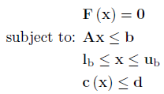

System of Constrained Nonlinear Equations (SCNLE)
Introduction
A system of constrained nonlinear equations has the following form:

Where F is a n x 1 vector of functions containing the nonlinear functions, which is subject to the following constraints:
Linear Inequalities
A is a m x n
sparse matrix, b is a m x 1 vector
Decision Variable Bounds
lb and ub are n x 1 vectors,
where -inf or inf indicate an unbounded lower or upper bound, respectively
Nonlinear Inequalities
c is a m x 1 vector of functions containing nonlinear
inequality constraints, d is a m x 1 vector
The goal is to set the function values of all equations to zero by selecting a value of x that also satisfies all constraints.
Example Problem
Not implemented yet (on to-do list)
Considerations
Copyright © 2011-2013 Jonathan Currie (I2C2)